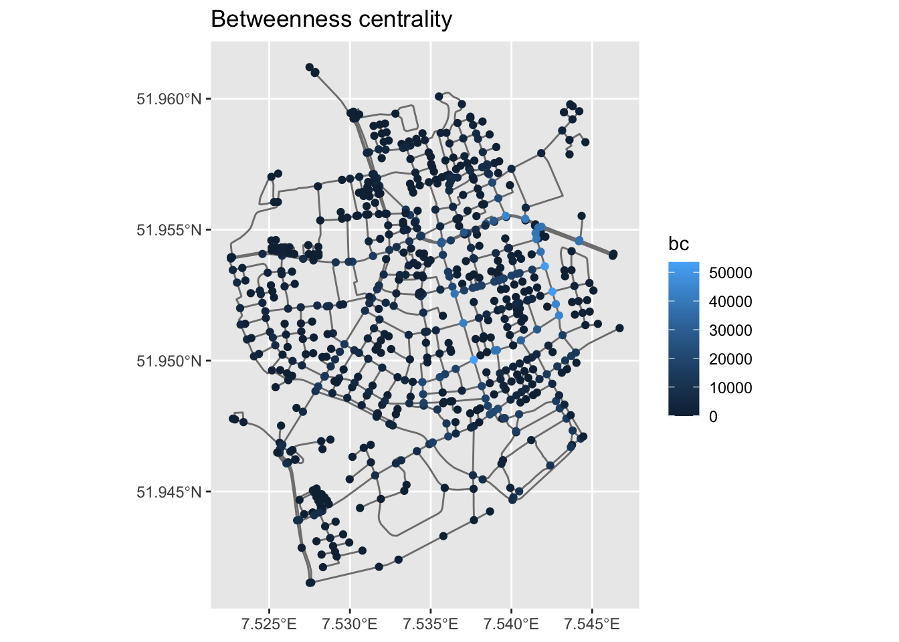
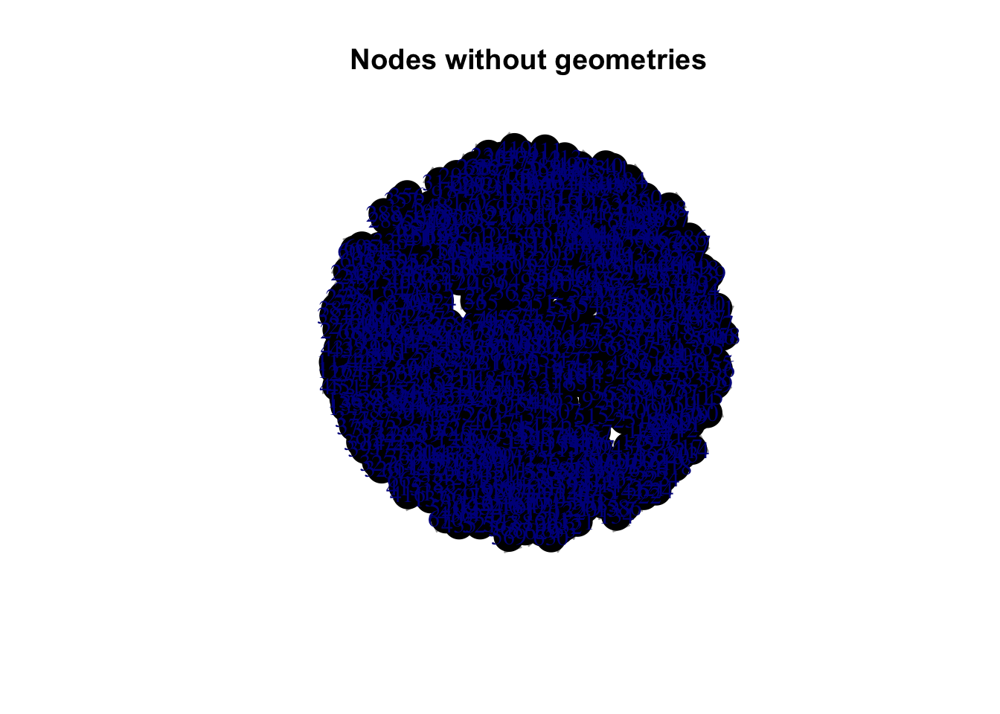
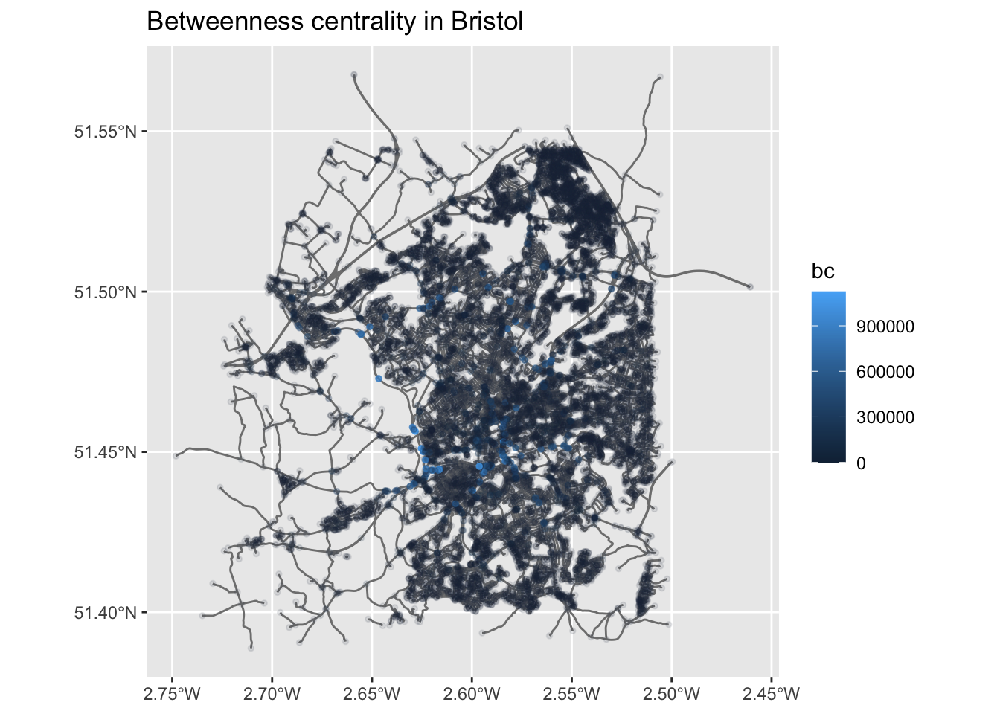
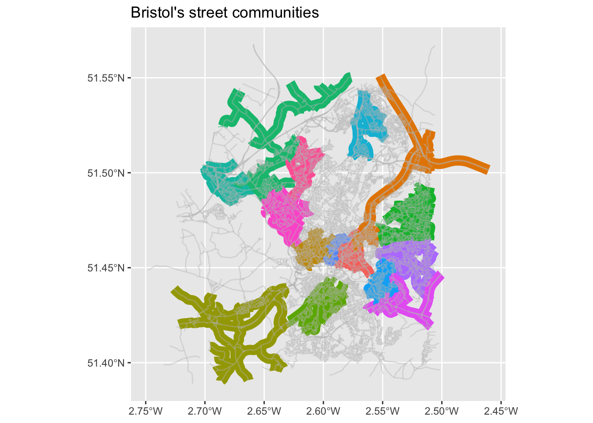

library(sfnetworks) #tidy geospatial networks
library(sf) #simple features, spatial data
library(tidygraph) #tidyverse's version of igraph
library(tidyverse) #you should know this by now
library(igraph) #as above
library(osmdata) #access OSM data
library(dbscan) #this is the dbscan clustering algorithm
knitr::opts_chunk$set(echo = TRUE) Street network analysis practical: networks within cities
Street netorks
Until this point the focus has been on networks between cities. Now we are turning the focus on networks within cities and more specifically on street networks. These are spatial networks whose edges and not only their nodes contain spatial information. To summarise, in spatial or, in other words, geospatial networks:
Nodes always contain geographical coordinates.
However, edges can:
either contain geographical information (e.g. road networks),
or not, and instead just link two nodes (e.g. social networks whose node’s geograpical location is known to us)
Street network analysis is not new. For instance, Leonhard Euler proved that the Seven Bridges of Königsberg problem had no solution. This type of problems and analysis – routing – later on became integral part of the standard GIS toolkit.
Why is it important to study street networks:
To understand the form of cities. There are quite a few recent studies (e.g. Boeing 2019, 2017), but this was also part of an older strand of research called Space Syntax (Hillier et al. 1976).
To understand the structure of transportation systems and support transportation planning.
Some key characteristics of street networks:
They might have multiple edges between two nodes.
Street networks are approximately planar (Boeing 2017).
Edges contain geographical information.
Topological measures are important to understand and (maybe compare different) urban street networks.
Try to think what the below topological measures might mean for a street network:
Node density
Node eccentricity
Network diameter
Node degree
Clustering coefficient
Betweenness centrality and its maximum value in a network
Closeness centrality
Key development: OpenStreetMap. Known as the Wikipedia for maps, OSM is a collaborative, citizen science project, which allows individuals to contribute in building openly distributed geographic data (Muki Haklay et al. 2021; Mordechai Haklay and Weber 2008). Through OSM urban analysts have access to street network data from around the world, something which wasn’t the case, let’s say, 20 years ago.
The below are based on the very helpful vignettes of the sfnetworks and osmdata packages. Please make sure to revisit these materials on your own time.
In geospatial networks:
nodes always contain geographical coordinates (
sfobjects),edges can:
either contain geographical information (e.g. road networks)
or not, and instead just link two nodes (e.g. geospatial social networks)
A first ‘toy’ example
The below code chunks create and manipulate a toy geospatial network.
p1 = st_point(c(7, 51))
p2 = st_point(c(7, 52))
p3 = st_point(c(8, 52))
p4 = st_point(c(8, 51.5))
l1 = st_sfc(st_linestring(c(p1, p2)))
l2 = st_sfc(st_linestring(c(p1, p4, p3)))
l3 = st_sfc(st_linestring(c(p3, p2)))
edges = st_as_sf(c(l1, l2, l3), crs = 4326)
nodes = st_as_sf(c(st_sfc(p1), st_sfc(p2), st_sfc(p3)), crs = 4326)
edges$from = c(1, 1, 3)
edges$to = c(2, 3, 2)As you can see below, net has a valid spatial network structure
net = sfnetwork(nodes, edges)Checking if spatial network structure is valid...Spatial network structure is validWe can check it’s class:
class(net)[1] "sfnetwork" "tbl_graph" "igraph" And check it characteristics.
net# A sfnetwork with 3 nodes and 3 edges
#
# CRS: EPSG:4326
#
# A directed acyclic simple graph with 1 component with spatially explicit edges
#
# A tibble: 3 × 1
x
<POINT [°]>
1 (7 51)
2 (7 52)
3 (8 52)
#
# A tibble: 3 × 3
from to x
<int> <int> <LINESTRING [°]>
1 1 2 (7 51, 7 52)
2 1 3 (7 51, 8 51.5, 8 52)
3 3 2 (8 52, 7 52)Just like igraph we can refer to nodes using the names we can assign to them.
nodes$name = c("city", "village", "farm")
edges$from = c("city", "city", "farm")
edges$to = c("village", "farm", "village")
edges # check the from and to columns Simple feature collection with 3 features and 2 fields
Geometry type: LINESTRING
Dimension: XY
Bounding box: xmin: 7 ymin: 51 xmax: 8 ymax: 52
Geodetic CRS: WGS 84
x from to
1 LINESTRING (7 51, 7 52) city village
2 LINESTRING (7 51, 8 51.5, 8... city farm
3 LINESTRING (8 52, 7 52) farm villagenet = sfnetwork(nodes, edges, node_key = "name")Checking if spatial network structure is valid...Spatial network structure is validnet’s edges contain geographical information. So, let’s create an other_net whose edges do not contain geographical information. This could have been a geospatial social network, for example. We know where each node is located in space and then the edges illustrate the existence of a connection between two nodes. To do so, we simply set the st_geometry equal to NULL. The plots below will make these differences clear.
st_geometry(edges) = NULL
other_net = sfnetwork(nodes, edges, edges_as_lines = TRUE)Checking if spatial network structure is valid...Spatial network structure is validWe can actually plot both example.
plot(net, cex = 2, lwd = 2, main = "Original geometries")plot(other_net, cex = 2, lwd = 2, main = "Geospatial social network example")A more ‘real’ street network
Let’s increase the complexity now. We can use the roxel data from the sfnetworks package. Roxel is a small town just outside Munster in Germany.
The as_sfnetwork() function converts the spatial object to a network. So, this is the spatial object and this is how it’s geometry looks like.
roxelSimple feature collection with 851 features and 2 fields
Geometry type: LINESTRING
Dimension: XY
Bounding box: xmin: 7.522594 ymin: 51.94151 xmax: 7.546705 ymax: 51.9612
Geodetic CRS: WGS 84
# A tibble: 851 × 3
name type geometry
* <chr> <fct> <LINESTRING [°]>
1 Havixbecker Strasse residential (7.533722 51.95556, 7.533461 51.95576)
2 Pienersallee secondary (7.532442 51.95422, 7.53236 51.95377, 7.53…
3 Schulte-Bernd-Strasse residential (7.532709 51.95209, 7.532823 51.95239, 7.5…
4 <NA> path (7.540063 51.94468, 7.539696 51.94479, 7.5…
5 Welsingheide residential (7.537673 51.9475, 7.537614 51.94562)
6 <NA> footway (7.543791 51.94733, 7.54369 51.94686, 7.54…
7 <NA> footway (7.54012 51.94478, 7.539931 51.94514)
8 <NA> path (7.53822 51.94546, 7.538131 51.94549, 7.53…
9 <NA> track (7.540063 51.94468, 7.540338 51.94468, 7.5…
10 <NA> track (7.5424 51.94599, 7.54205 51.94629, 7.5419…
# ℹ 841 more rowsplot(st_geometry(roxel))Now, we can convert it to a geospatial network and plot it.
net <- as_sfnetwork(roxel)
plot(net)Instead of plot() we can also use ggplot2 functions. autoplot() does what it says.
autoplot(net) +
ggtitle("Road network, Münster Roxel")We have a network, so let’s do some network analysis.
First thing we need to do is to activate the network component we are interested in. In the below example we want to calculate the betweenness centrality of nodes and, therefore, we need to first activate the nodes.
So, the net object now has a bc column in the node attributes
net = net %>%
activate("nodes") %>%
mutate(bc = centrality_betweenness()) %>%
print() # print() is equal to just run the object, in this case net.# A sfnetwork with 701 nodes and 851 edges
#
# CRS: EPSG:4326
#
# A directed multigraph with 14 components with spatially explicit edges
#
# A tibble: 701 × 2
geometry bc
<POINT [°]> <dbl>
1 (7.533722 51.95556) 12936.
2 (7.533461 51.95576) 11824
3 (7.532442 51.95422) 11926.
4 (7.53209 51.95328) 7259.
5 (7.532709 51.95209) 5668
6 (7.532869 51.95257) 2374
# ℹ 695 more rows
#
# A tibble: 851 × 5
from to name type geometry
<int> <int> <chr> <fct> <LINESTRING [°]>
1 1 2 Havixbecker Strasse residential (7.533722 51.95556, 7.533461 51…
2 3 4 Pienersallee secondary (7.532442 51.95422, 7.53236 51.…
3 5 6 Schulte-Bernd-Strasse residential (7.532709 51.95209, 7.532823 51…
# ℹ 848 more rowsWe can now create a map of this spatial network, the size and the colour of its nodes are based on their betweenness centrality.
ggplot() +
geom_sf(data = st_as_sf(net, "edges"), col = "grey50") +
geom_sf(data = st_as_sf(net, "nodes"), aes(col = bc), size = 1.5) +
ggtitle("Betweenness centrality")
To better understand the structure of the above ggplot() look up geom_sf() and st_as_sf. If you only run net and st_as_sf(net, "edges") you can see what was the type of net originally and what it was transformed to with the st_as_sf.
Question: Can you interpret betweenness centrality in this context?
If we want to get rid of geometries, all we need to do is to remove the geometry. As per base R, setting something equal to NULL means that we remove it.
net %>%
activate("edges") %>%
st_set_geometry(NULL) %>%
plot(draw_lines = T, main = "Edges without geometries")net %>%
activate("nodes") %>%
st_set_geometry(NULL) %>%
plot(vertex.color = "black", main = "Nodes without geometries")
A real world example from Open Street Map
Let’s now try to use some real-world data from OSM. The below code extracts the Bristol street data from the OSM API.
To understand the key and value options, go to OSM’s wiki page.
Keep an eye on the below. Depending on your internet connections and the OSM’s API response time, it might take a couple of minutes. If you get an error message from running the opq() try again, it might work the second time as something might have gone wrong the first one. This is not uncommon when we extract data over the internet through an API. Usually such API requests are wrapped up in a if_else() function to re-try if the first attempt was unsuccessful.
bristol_data <- opq(bbox = 'Bristol') %>%
# getbb ("bristol uk") %>%
# opq () %>%
add_osm_feature(
key = 'highway',
value = c("motorway", "trunk", "primary", "secondary", "tertiary", "residential", "unclassified", "motorway_link", "trunk_link", "primary_link", "secondary_link","tertiary_link", "residential_link")
) %>%
osmdata_sf(quiet = FALSE)Issuing query to Overpass API ...Announced endpoint: gall.openstreetmap.de/Query complete!converting OSM data to sf format# extract the roads
bristol_roads <- st_geometry(bristol_data$osm_lines)
# build the sfnetwork object
bristol_sfn <- as_sfnetwork(bristol_roads, directed = FALSE, length_as_weight = TRUE)
ggplot() +
geom_sf(data = st_as_sf(bristol_sfn, "edges"), col = "grey50") +
geom_sf(data = st_as_sf(bristol_sfn, "nodes"), size = .01)Network data wrangling. We need to:
- Remove multiple edges and loops. AKA simplifying the network.
- Remove nodes that are interior points in a line and define the shape of the line. AKA smoothing the network.
To keep track of the changes, let’s keep a note of the original network size.
# size of original network
gsize(bristol_sfn) # number of edges[1] 15605gorder(bristol_sfn) # number of nodes[1] 21412Now we can simplify the network.
bristol_wrangled <- bristol_sfn %>%
activate("edges") %>%
filter(!edge_is_multiple()) %>% # Simplify the network
filter(!edge_is_loop()) # Simplify the network
# size of simplified network
gsize(bristol_wrangled) # number of edges[1] 15432gorder(bristol_wrangled) # number of nodes[1] 21412Remove the interior points…
bristol_wrangled <- convert(bristol_wrangled, to_spatial_smooth)
# size of simplified network
gsize(bristol_wrangled) # number of edges[1] 12063gorder(bristol_wrangled) # number of nodes[1] 18043… and plot the network again.
ggplot() +
geom_sf(data = st_as_sf(bristol_wrangled, "edges"), col = "grey50") +
geom_sf(data = st_as_sf(bristol_wrangled, "nodes"), size = .01)Network measures
Now we can calculate betweenness centrality for Bristol, using the OSM street network we acquired.
bristol_wrangled <- bristol_wrangled %>%
activate("nodes") %>%
mutate(bc = centrality_betweenness())
ggplot() +
geom_sf(data = st_as_sf(bristol_wrangled, "edges"), col = "grey50") +
geom_sf(data = st_as_sf(bristol_wrangled, "nodes"), aes(col = bc,
alpha = bc), # Increase opacity based on betweenness...
size = 1) +
guides(alpha=FALSE) + # ...but exclude this from the legend. Remove this line to see what will happen
ggtitle("Betweenness centrality in Bristol")Warning: The `<scale>` argument of `guides()` cannot be `FALSE`. Use "none" instead as
of ggplot2 3.3.4.
Question: How can we interpret this map?
Remember the community detections algorithms? We can detect such communities within the street network. These are neighbourhoods of streets which are better connected internally than externally with the whole network. There is a contradiction here, no? Community detection is about nodes, not edges? However, here we are interested in clustering edges. So, we will do a little trick. We will first ‘inverse’ our spatial network, which means that the nodes become edges and vice versa. We will do this with morph(to_linegraph). Read the Wikipedia entry of line graps and see the below image for an example. The unmorgh() brings the changes – that is the new group column back to the original network, that we now call grouped_net. For more details, have a look here.

Source: mathworld.wolfram.com
grouped_net = bristol_wrangled %>%
morph(to_linegraph) %>%
mutate(group = group_louvain()) %>%
unmorph()
# A new group column has been added with the community membership
grouped_net# A sfnetwork with 18043 nodes and 12063 edges
#
# CRS: EPSG:4326
#
# An undirected multigraph with 6703 components with spatially explicit edges
#
# A tibble: 18,043 × 2
x bc
<POINT [°]> <dbl>
1 (-2.460661 51.5015) 0
2 (-2.521586 51.51787) 11802.
3 (-2.546315 51.54446) 0
4 (-2.552245 51.40075) 7013
5 (-2.516866 51.51245) 5907.
6 (-2.51898 51.51272) 35002.
# ℹ 18,037 more rows
#
# A tibble: 12,063 × 5
from to weight x group
<int> <int> <dbl> <LINESTRING [°]> <int>
1 6 7 219. (-2.51898 51.51272, -2.518938 51.51293, -2.518937 51… 22
2 17 18 5.23 (-2.528247 51.50576, -2.528179 51.50578) 22
3 24 25 428. (-2.550685 51.50946, -2.550843 51.50949, -2.551013 5… 2
# ℹ 12,060 more rows# There are quite a few communities overall
grouped_net %>%
activate("edges") %>%
pull(group) %>%
unique() %>%
length()[1] 6749grouped_net %>%
activate("edges") %>%
st_as_sf() %>% # If you remember, we used this above.
transmute(group = as.factor(group)) %>% # We turn community membership to a factor.
filter(group %in% c(1:15)) %>% # Only plotting the first 15 communities.
ggplot() +
geom_sf(aes(col = group), lwd = 4) + # This plots the communities ...
geom_sf(data = st_as_sf(bristol_wrangled, "edges"),# ... and this all the network.
col = "grey", lwd = 0.5, alpha = 0.4) +
theme(legend.position="none") + # No legend please.
ggtitle("Bristol's street communities") 
Task: Read the routing vigneette of `sfnetworks and apply these techniques in the Bristol street network.
References
Boeing, Geoff. 2017. “OSMnx: New Methods for Acquiring, Constructing, Analyzing, and Visualizing Complex Street Networks.” Computers, Environment and Urban Systems 65: 126–39.
———. 2019. “Urban Spatial Order: Street Network Orientation, Configuration, and Entropy.” Applied Network Science 4 (1): 1–19.
Haklay, Mordechai, and Patrick Weber. 2008. “Openstreetmap: User-Generated Street Maps.” IEEE Pervasive Computing 7 (4): 12–18.
Haklay, Muki, Dilek Fraisl, Bastian Greshake Tzovaras, Susanne Hecker, Margaret Gold, Gerid Hager, Luigi Ceccaroni, et al. 2021. “Contours of Citizen Science: A Vignette Study.” Royal Society Open Science 8 (8): 202108.
Hillier, Bill, Adrian Leaman, Paul Stansall, and Michael Bedford. 1976. “Space Syntax.” Environment and Planning B: Planning and Design 3 (2): 147–85.